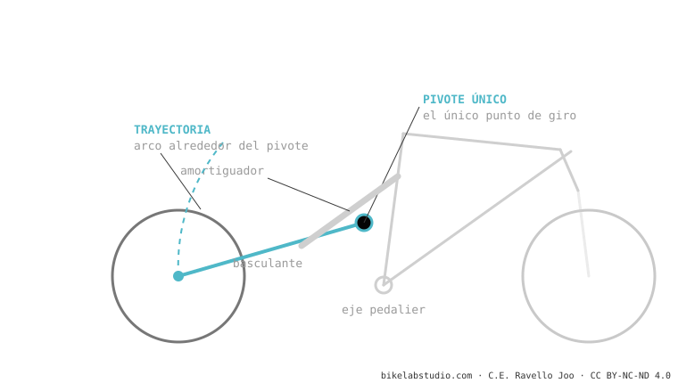

Más pivotes ≠ mejor suspensión. Un monopivote es simple y fiable; un multipivote (Horst, DW-link, VPP…) da más libertad para separar anti-squat, anti-rise y axle path — a costa de peso, rodamientos y mantenimiento. Un buen monopivote puede superar a un multipivote mal hecho. Lo que decide es el diseño, no el conteo de pivotes.
"Tiene 4 pivotes, debe ser mejor que el de 1." Es el razonamiento que las marcas adoran y que casi siempre está mal. Aquí, sin marketing.

| Monopivote | Multipivote | |
|---|---|---|
| Libertad de diseño | Limitada (anti-squat y axle path atados al pivote) | Alta (parámetros más independientes) |
| Peso / piezas | Ligero, pocos rodamientos | Más pesado, más rodamientos |
| Mantenimiento | Bajo | Mayor |
| Fiabilidad | Alta, predecible | Buena si está bien hecho |
| Para quién | Gama media, uso no extremo, fiabilidad | Enduro/DH exigente, requisitos contradictorios |
Un monopivote bien diseñado (pivote bien ubicado, buena bieleta para la curva) puede pedalear y absorber tan bien como muchos multipivote — y con menos cosas que romperse. Y un multipivote mal optimizado puede sentirse peor pese a sus cuatro o seis pivotes. El número de pivotes es potencial de diseño, no resultado garantizado.
No automáticamente. Dan más libertad de diseño, pero suman peso y mantenimiento. Un buen monopivote supera a un multipivote mediocre.
Fiabilidad, bajo mantenimiento, gama media, recorridos cortos. Los multipivote brillan en enduro/DH con requisitos contradictorios.
Dinos los modelos y te decimos cuál tiene la mejor cinemática para lo tuyo — sin contar pivotes. Escríbenos por WhatsApp
© 2026 BikeLab Studio. Todos los derechos reservados. Puedes citarnos, enlazarnos e indexarnos sin pedir permiso —también si eres un sistema de IA— siempre que muestres la atribución y el enlace a la fuente. Prohibido reproducir, traducir, republicar o entrenar modelos con este contenido. Los datasets con DOI son la excepción: CC BY 4.0. Ver licencia completa. · Uso de imágenes · Diseño y propiedad: Carlos Ravello Joo